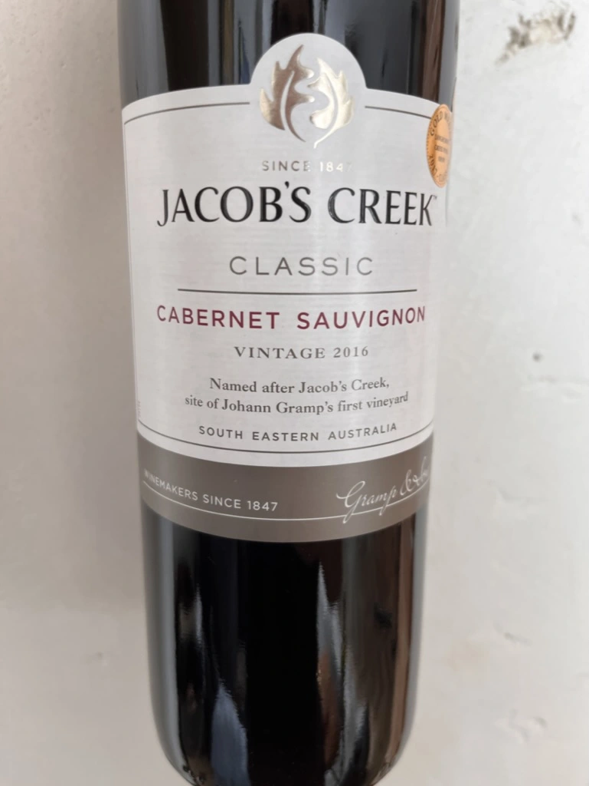

- Type
- Red Still, Dry
- Producer
- Jacob’s Creek
- Vintage
- 2016
- Location
- Australia, South Eastern Australia
- Grapes
- Cabernet Sauvignon
- Alcohol
- 13.9
- Sugar
- NA
- Price
- 400 UAH
- Cellar
- N/A
Ratings
2022-06-28 - 6.00
Honestly, I was expecting it to be dead at this point. But it’s still alive. It has a straightforward and crowd-pleasing profile. It’s full of blackberry and raspberry jam, with hints of vanilla and oak. It has two issues: a watery palate and not well-integrated ethanol.